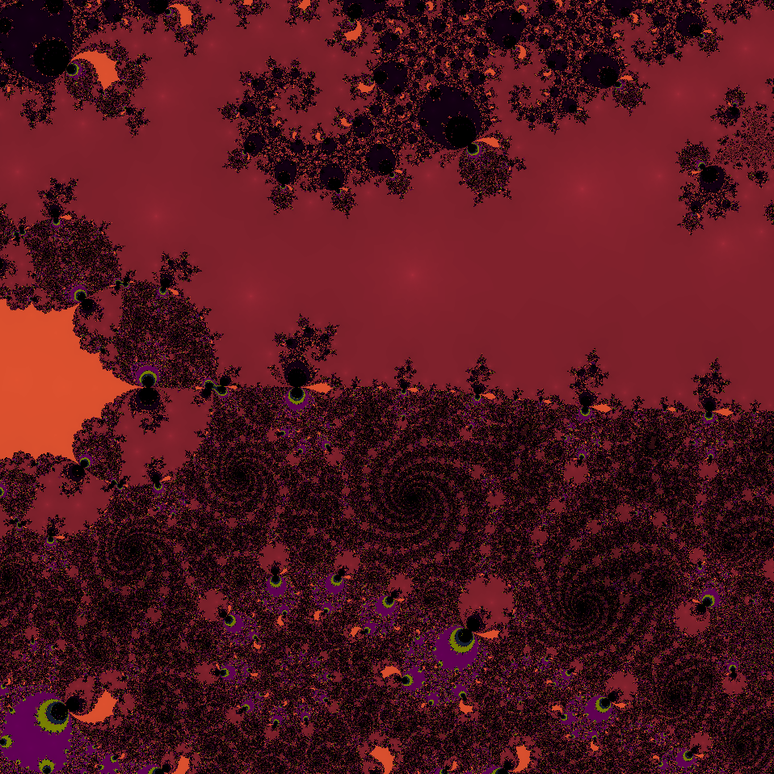
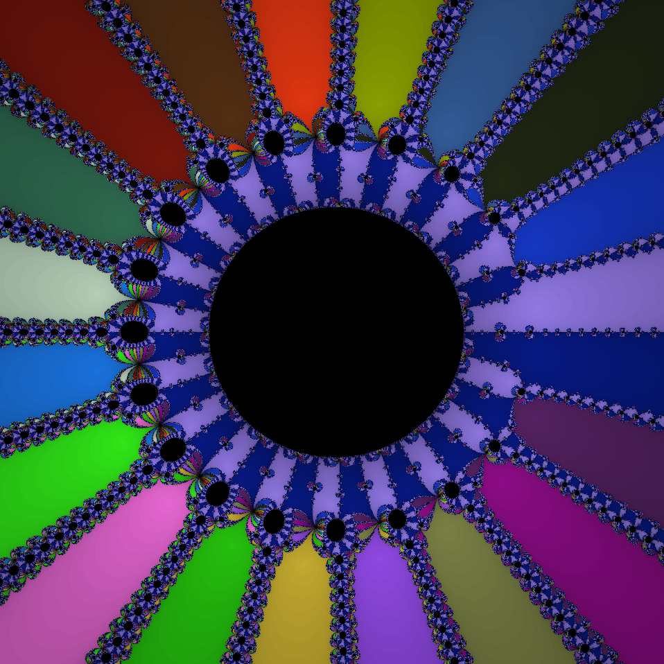
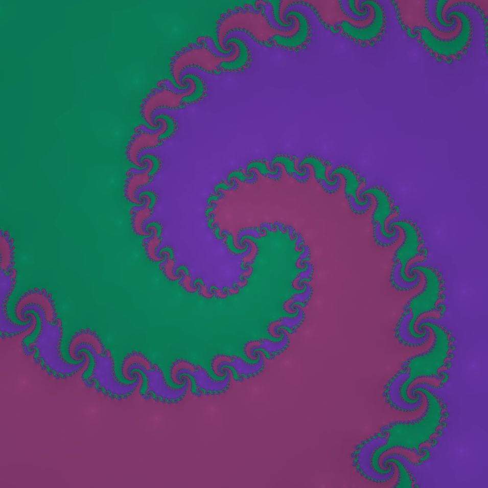
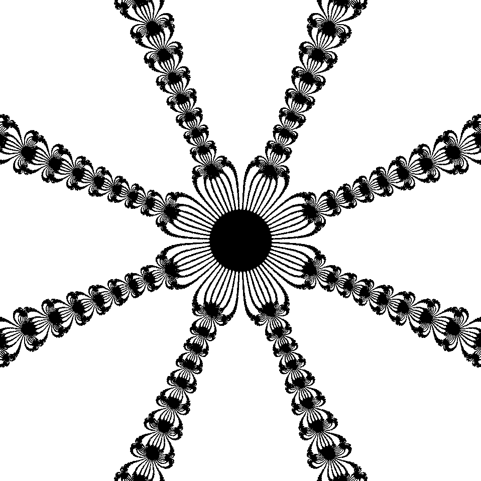

Coding is fun!
Included on here are some web-based personal projects of mine, which are currently focused on visualizations of Newton's method (found in the "Newton's Method" dropdown). Thanks for taking a look and feel free to explore!
Below are a few images with some of the more exciting to look at fractal patterns generated by the fractal visualizer.
   